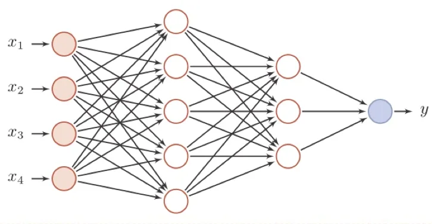
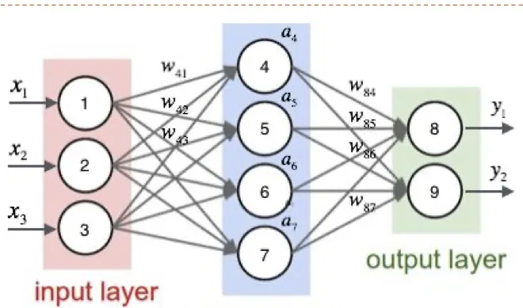
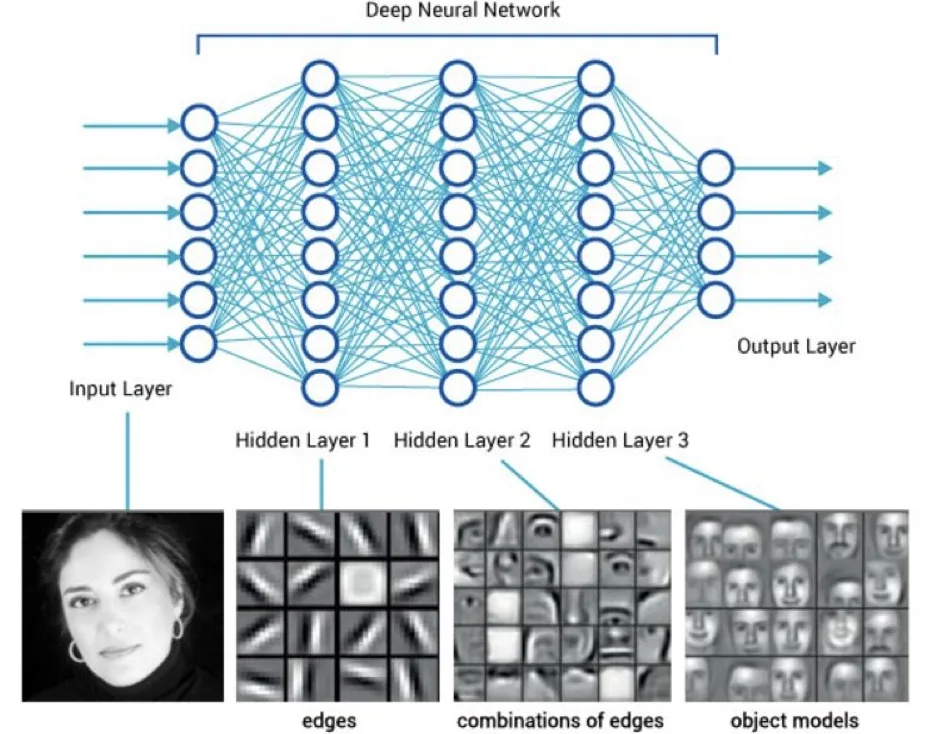

计算机视觉 · 第 5 章 前馈神经网络
5.4 前馈神经网络
这一节正式给出「前馈神经网络」的定义：层内无连接、层间全连接、没有反馈。然后写出它在网络中传播信息的那组迭代公式——后面几节讲损失函数与反向传播时，反复要用的记号都在这里定下来。最后两个结论很重要：通用近似定理说明了这种网络的能力上限，而「特征转换」则说明了它在机器学习流程中的位置。
1. 网络结构
前馈神经网络（Feedforward Neural Network）又叫全连接神经网络或多层感知器（Multi-Layer Perceptron，MLP），它的结构由三条约定刻画：
- 各神经元分别属于不同的层，层内无连接；
- 相邻两层之间的神经元全部两两连接，因此参数数量随层宽增长得很快；
- 整个网络无反馈，信号从输入层向输出层单向传播，可以用一个有向无环图表示。
「无反馈」是它与后面要学的循环神经网络（第 7 章）最根本的区别：前馈网络在某一时刻的输出只取决于当前的输入，而循环网络会把上一时刻的状态也接回来。

2. 信息传播：一组要记熟的记号
给定一个前馈神经网络，课件用下面这套记号来描述它：层数为 L；第 l 层神经元的个数记为 n(l)；第 l 层的激活函数记为 fl(·)；第 l 层的权重矩阵记为 W(l) ∈ ℝn(l)×n(l−1)，偏置向量记为 b(l) ∈ ℝn(l)。
令 a(0) = x 表示输入，前馈神经网络就通过不断迭代下面两个公式来传播信息：
- z(l) = W(l)a(l−1) + b(l) （第 l 层的净输入：上一层输出经线性变换得到）
- a(l) = fl(z(l)) （经过激活函数，得到第 l 层的输出）
不断迭代，直到最后一层得到 a(L)，它就是整个网络的输出。也就是说，一个多层前馈网络本质上是一个复合函数：把第 1 层到第 L 层的变换依次套起来。这一点在 5.8 节讲反向传播时会立刻派上用场——因为求导要靠链式法则。

3. 深层前馈神经网络
把上面这组迭代多做几次，就得到深层前馈神经网络。深度带来的是逐层抽象：浅层学到的是比较原始的模式，越往后的层越能组合出抽象的表示。这也是「深度学习」这个名称的由来——关键不在于单个神经元多聪明，而在于层数堆起来以后表达的层次性。

4. 通用近似定理
层数堆起来以后，网络的能力到底有多强？课件给出的是通用近似定理：对于具有线性输出层和至少一个使用「挤压」性质的激活函数的隐藏层组成的前馈神经网络，只要其隐藏层神经元的数量足够，它可以以任意的精度来近似任何一个定义在实数空间中的有界闭集（上的连续函数）。
这个定理有两个要点值得强调。第一，它说的是「存在这样一组参数」，而不是「梯度下降一定能找到」——定理保证了表达能力，没有保证可训练性，这正是后面 5.7、5.9 两节要面对的困难。第二，「挤压」性质的激活函数指的是像 Sigmoid 那样把实数轴压到有限区间的函数，ReLU 严格说并不满足这一条，但它有相应的近似结论（课件在课后练习里也提到了两层 ReLU 网络的版本）。
5. 应用到机器学习
前馈神经网络可以作为一个「万能」函数来使用，可以进行复杂的特征转换，或逼近一个复杂的条件分布。把它放进机器学习的流程里看：
- 以分类为例，在机器学习中，输入样本的特征对分类器的影响很大，好的特征可以极大提高分类器的性能；
- 多层前馈神经网络可以看作一个非线性复合函数 φ：将输入 x ∈ ℝD 映射到输出 φ(x) ∈ ℝD′；
- 因此，多层前馈神经网络也可以看成是一种特征转换方法，其输出 φ(x) 作为分类器的输入进行分类。
这解释了一件重要的事：以前特征要人手工设计，现在把特征提取这一环也交给网络自己学——网络的前几层在干「提特征」的活，最后一层在干「分类」的活，两者被同一套梯度下降一起优化。
本节小结
- 前馈神经网络（全连接网络、多层感知器）的三条约定：层内无连接、相邻层全连接、无反馈（有向无环图）；
- 记号：L 层、第 l 层 n⁽ˡ⁾ 个神经元、激活函数 f_l、权重 W⁽ˡ⁾ 与偏置 b⁽ˡ⁾；传播公式为 z⁽ˡ⁾ = W⁽ˡ⁾a⁽ˡ⁻¹⁾ + b⁽ˡ⁾ 与 a⁽ˡ⁾ = f_l(z⁽ˡ⁾)，起点 a⁽⁰⁾ = x；
- 整个网络是一个复合函数，这一事实是下一节「为什么必须有非线性」以及 5.8 节「用链式法则求梯度」的共同前提；
- 通用近似定理：隐藏层足够宽、激活函数有「挤压」性质时，网络能以任意精度近似有界闭集上的连续函数；定理保证的是表达能力，不保证训练一定能找到那组参数；
- 从机器学习流程看，多层前馈网络是一种非线性特征转换 φ，其输出再交给分类器，等于把「特征工程」也纳入了学习。